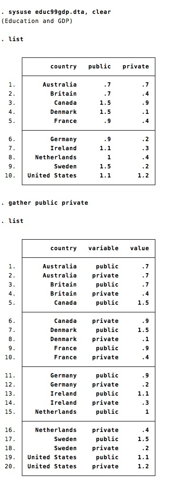
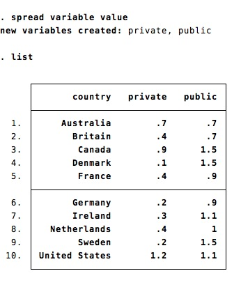

This is a basic implementation of the tidyr package from R.
gather transforms a wide dataset into a long dataset (i.e. reshape long). The command takes a list of variables as argument. This list corresponds to variables to gather.
Use the option label to save the variable labels as a new variable

spread transforms a long dataset into a wide dataset (i.e. reshape wide). The command takes two variable names as argument. The first variable contains the new variable names. The second variable contains the new variable values.

net install tidy, from(https://github.com/matthieugomez/tidy.ado/raw/master/)
If you have a version of Stata < 13, you need to install it manually:
cap ado uninstall tidy
net install tidy, from("~/SOMEFOLDER")